This trip to Italy was not about checking a country off a list. We had been there recently, but Sicily felt like a return to family roots, with my husband's heritage being 75% Sicilian and 25% Neapolitan. After three unforgettable weeks exploring Sardinia and Sicily with our teenagers, it is safe to say we left already dreaming about when we could go back.
So from the very beginning, this trip had a little more heart to it.
We had beach days, adventure, ridiculously good food, and an embarrassing number of granita stops, which I say with zero regret. If you are planning something similar, here is everything we loved, what we would absolutely do again, and the few things I would tweak next time if I were being picky.
Before You Go
One of the first things we noticed was how different Sardinia and Sicily felt from home. They were warm and welcoming, but not flooded with American tourists the way some parts of Italy can feel. That made the whole trip feel more immersive, like we were getting a real glimpse into the rhythm of the place instead of just skimming the surface.
People were lovely everywhere we went, but English was not always spoken as widely, which honestly made the trip better. We had to slow down, pay attention, use our Italian, and lean into the experience instead of expecting everything to bend around us. I loved that more than I thought I would.
We also loved seeing locals and visitors mixed together in piazzas, cafés, beaches, and restaurants. It did not feel overly polished or tourist-built. It felt lived in. We met travelers from Germany, Switzerland, Austria, Italy, and more Americans than you might expect, though still nowhere near the crowds you see in the big-name Italian hotspots.
A few Italian phrases go a very long way:
- Buongiorno: Good morning, and often into the early afternoon too.
- Buonasera: Good evening, or later in the day.
- Ciao: Fine with friends or in casual settings, but buongiorno feels more polite when you are walking into a shop or restaurant.
- Da asporto, per favore: To go, please.
- Il conto, per favore: The check, please.
Also, download WhatsApp before you go. I am serious. So many restaurants, agriturismi, boat operators, and local businesses use it for everything. It is basically part of daily life there.
One random thing locals kept asking us in Sardinia was, "Did you fly in from New York?" That is because Delta now has a seasonal nonstop from JFK to Olbia, which makes the island much easier to get to than it used to be. But even with that, Sardinia still feels very much like itself, which is exactly what made us love it.
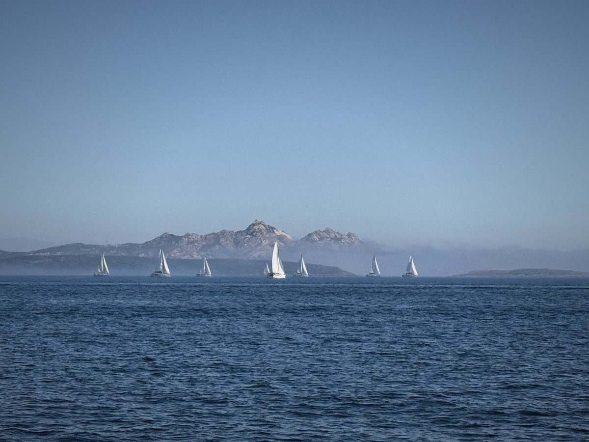
Porto Cervo and Costa Smeralda, Sardinia
We started in Porto Cervo on Sardinia's Costa Smeralda, but we did not stay right in the middle of everything. We booked a quiet place in a residential neighborhood just outside the marina, and for arrival day, it was basically perfect.

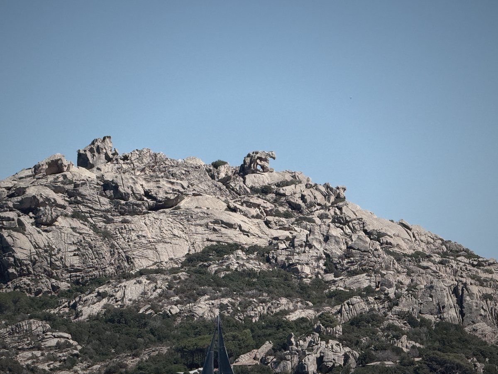
We were coming off a long travel day and some serious jet lag, so having a peaceful place to land made a huge difference. The beach right in front of our Airbnb was the first little gift of the trip. The water was crystal clear, the sand was soft, and we spent that first day doing almost nothing, which was exactly what our bodies needed.
But if I am being really honest, I probably would not choose that exact spot again for a longer stay. It was beautiful, but there was not a ton within walking distance, and we are the kind of people who like to wander out for dinner, poke around town, and feel a little more connected to the place we are staying. So it was a dream for arrival, but not the best base if you want to be out and about on foot.
For lunch after our red-eye, we went to Cibò Porto Cervo along the promenade. It was casual and fresh, and the pizza was exactly what we wanted. It was a little light on atmosphere because it sat in the middle of what felt like an outdoor mall setting, but when the food is that good and you are that tired, it honestly does not matter much.
One evening we had dinner at Ristorante I Frati Rossi, and that turned into one of my favorite meals of the trip. The salt-crusted fish was so good it made me want to order fish everywhere after that. It was one of those dinners where everyone gets a little quiet because the food is just that good.
One of the biggest highlights in Sardinia was a full-day boat excursion through the La Maddalena Archipelago. We did a skipper-led tour with lunch on board and swim stops in water so turquoise it almost seemed edited.
We also passed Spiaggia Rosa, one of Sardinia's most famous natural landmarks. The beach is protected, so you cannot walk on the sand, but depending on your boat route, you can get close enough to admire the pink shoreline from the water or from designated viewing areas. It is one of those places that feels even more special because it is so carefully preserved.
On some tours, you can also swim to a nearby access point where a boardwalk leads to an observation area. The pink color comes from tiny fragments of shells and microscopic marine organisms mixing into the white sand, which is wild if you think about it. Nature really showed off there.
The water in late June was colder than I expected, but after long sun-soaked days, every swim felt amazing anyway.
And then there were the superyachts. Watching those enormous boats glide into Porto Cervo every evening became its own little entertainment. If you are at all fascinated by yachts, this is your place.
One of our favorite evenings took us inland to Agriturismo La Colti, and this was one of those meals I would tell a friend not to miss. We had porceddu, homemade pasta, local cheeses, and all the family-style food that makes you feel like you have been invited into someone's real life instead of just seated at a restaurant.
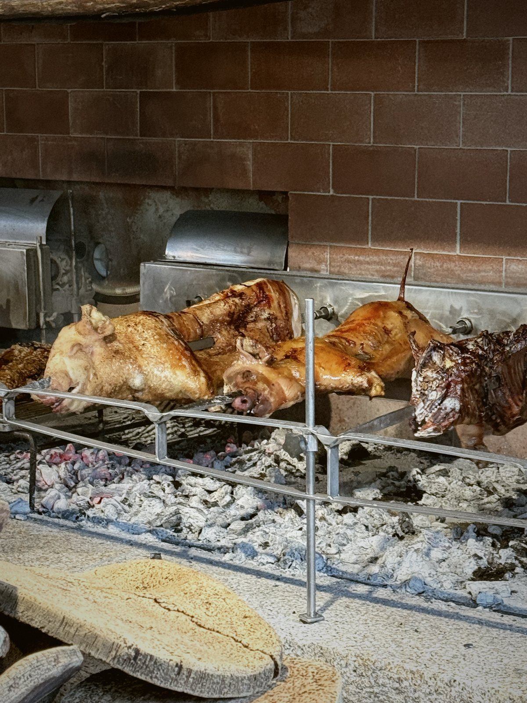
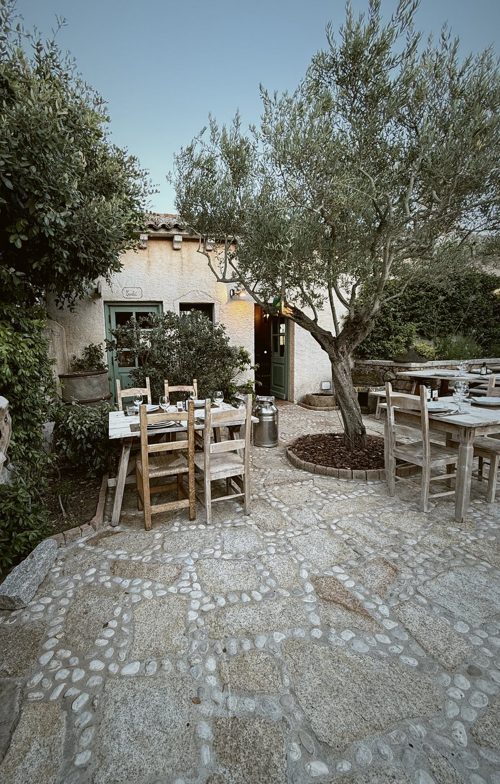
Watching the porceddu being prepared was part of the experience too. The pigs were roasted over open fire on huge spits just outside the dining area, which was fascinating to watch. It is also worth knowing that this kind of meal may not be for everyone, especially if you are vegetarian or vegan.
Our one real miss was Phi Beach. The setting is gorgeous, no question. Sunset over the rocks and sea is stunning. But the vibe shifts more into beach club and party mode as the evening goes on, which just was not what we wanted with the kids. If that is your thing, you might love it. We just wanted something calmer.
Gola di Gorropu
After Porto Cervo, we rented a car and drove one of the most scenic and winding roads toward Gola di Gorropu, which is one of Europe's deepest canyons.
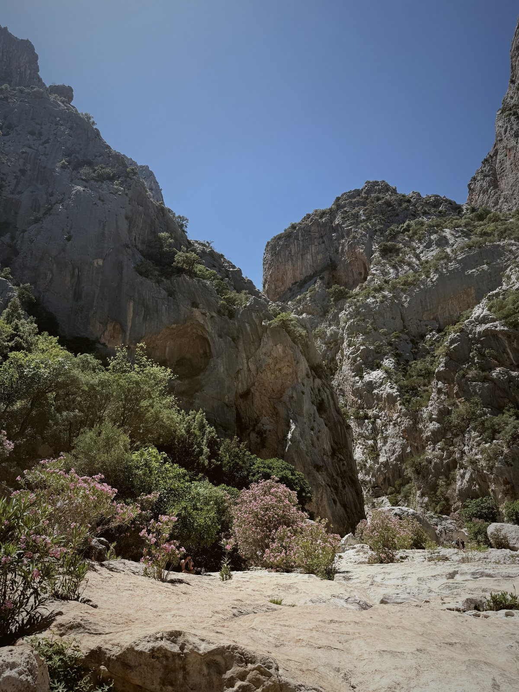
If winding roads make you nauseous even a little bit, bring Dramamine. I mean it.
Before we got there, we stopped at a CRAI grocery store for snacks, croissants, fruit, and coffee. One thing Italy does so well is make even a random grocery stop feel weirdly enjoyable.
At Campo Base Gorropu, we took the jeep shuttle down to the trailhead, and I am so glad we did. The hike from the drop-off point to the canyon is only about 1.5 miles, but do not let that fool you. The terrain is rocky and uneven, the heat was intense, and it felt much harder than the mileage suggests. We hike a lot as a family, and even we were like, wow, okay, this is a workout.
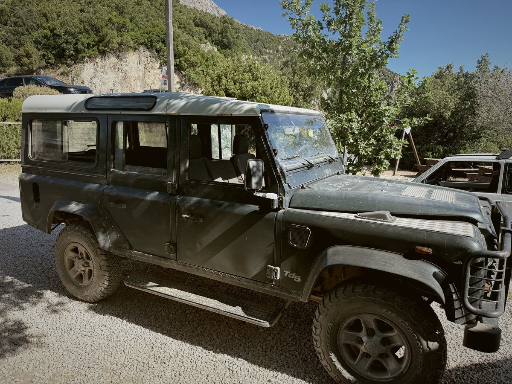
At the base, the trail splits. One direction leads into the canyon itself, while the other leads to rock pools and a natural spring where you can refill your water bottles beneath a Sardinian flag. That cold spring water was one of the best little surprises of the day.
Most people hike into the canyon until the turnaround point and then head back the same way. The walls get so narrow and dramatic that every step feels worth it.
The jeep ride back up was just as wild as the ride down, with steep switchbacks, drop-offs, and bumps. Somehow our kids still fell asleep, which felt both hilarious and deeply unfair.
Also, Campo Base Gorropu still uses traditional squat toilets, so now you know.
Santa Maria Navarrese
Santa Maria Navarrese quickly became one of our favorite towns in Sardinia.
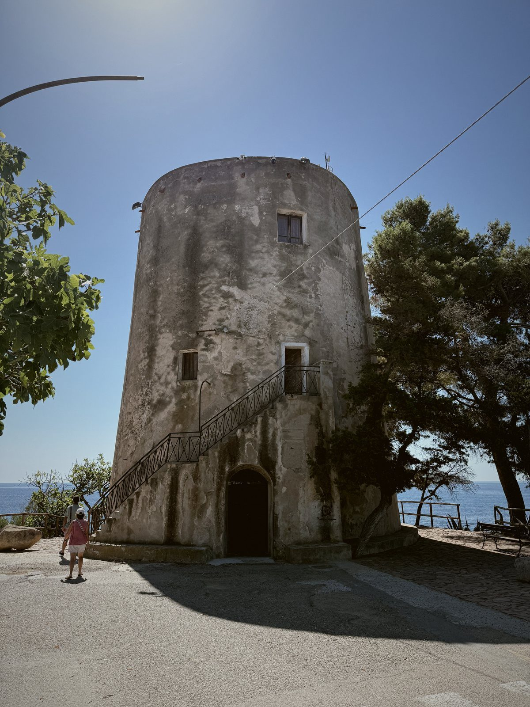
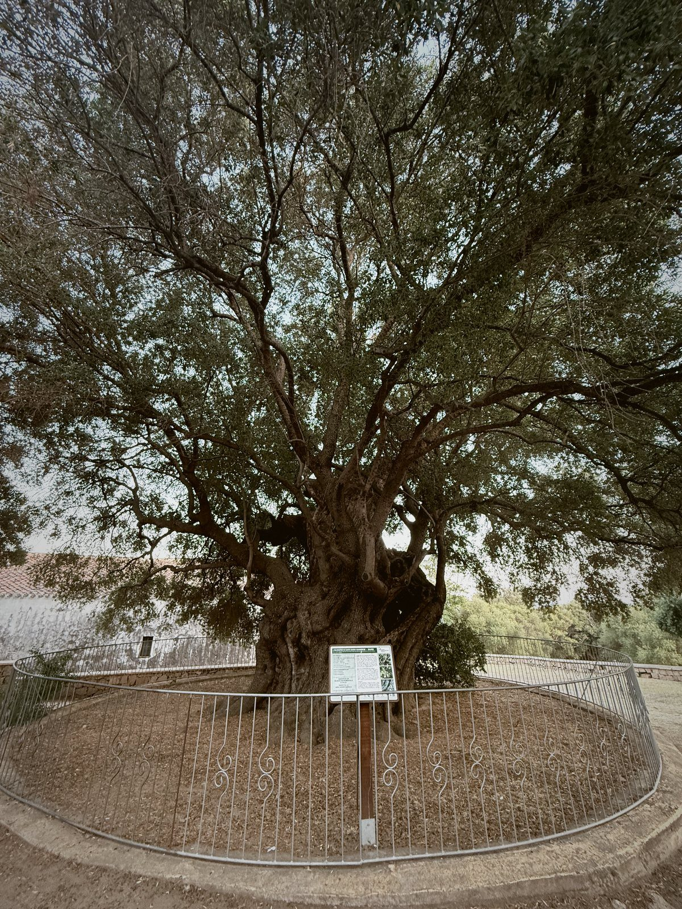
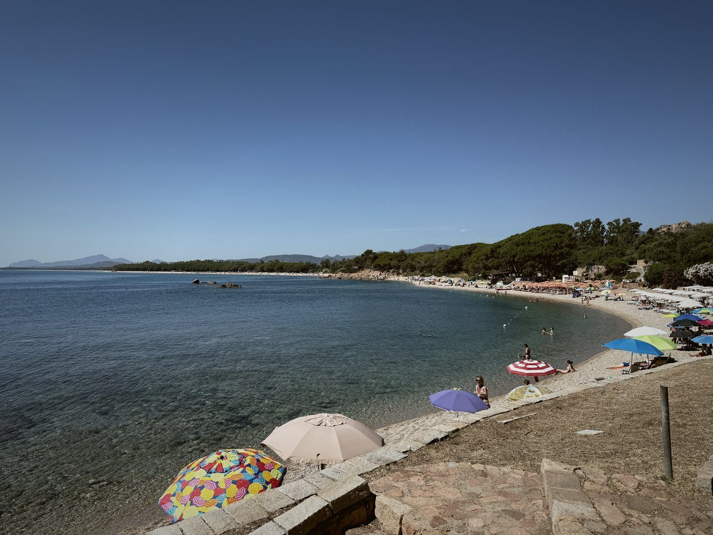
There are ancient olive trees all over, and beside the historic church stands one believed to be more than 1,000 years old. The whole town feels relaxed, authentic, and wonderfully untouched by mass tourism. Instead of souvenir shops and tour groups, you see actual life unfolding around you. Kids playing, families gathering, bikes going by, people lingering in the piazza. It felt so good to be somewhere that still felt like itself.
English is not spoken everywhere, so those few Italian phrases really helped.
Our favorite pizza was at Su Pontu, and Maestro Gelateria became our nightly ritual. I do not say this lightly, but yes, it really is worth going back more than once.
Water shoes also became one of the smartest things we packed. Sardinia's beaches are gorgeous, but they are rocky, and those shoes saved our feet more than once. Not glamorous, but extremely practical.
Exploring the Gulf of Orosei by Boat
If I had to recommend one thing above everything else in Sardinia, it would be renting your own boat.
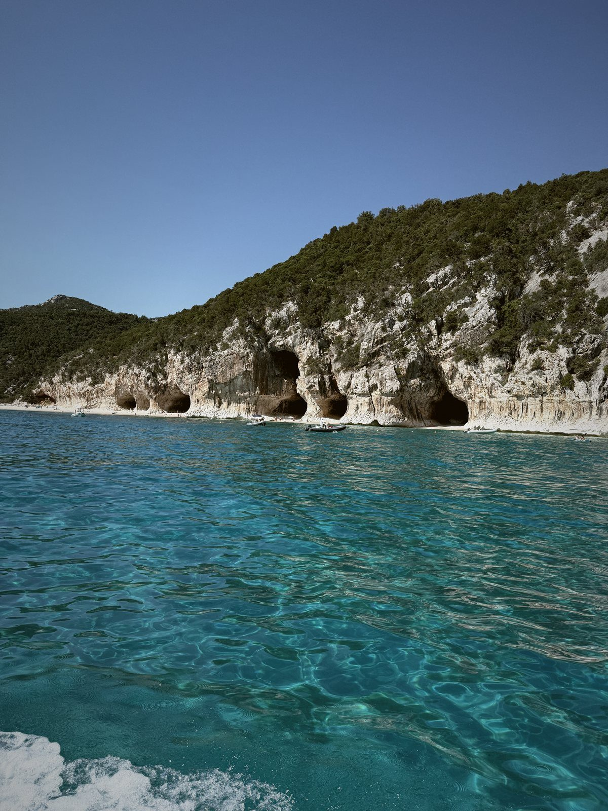
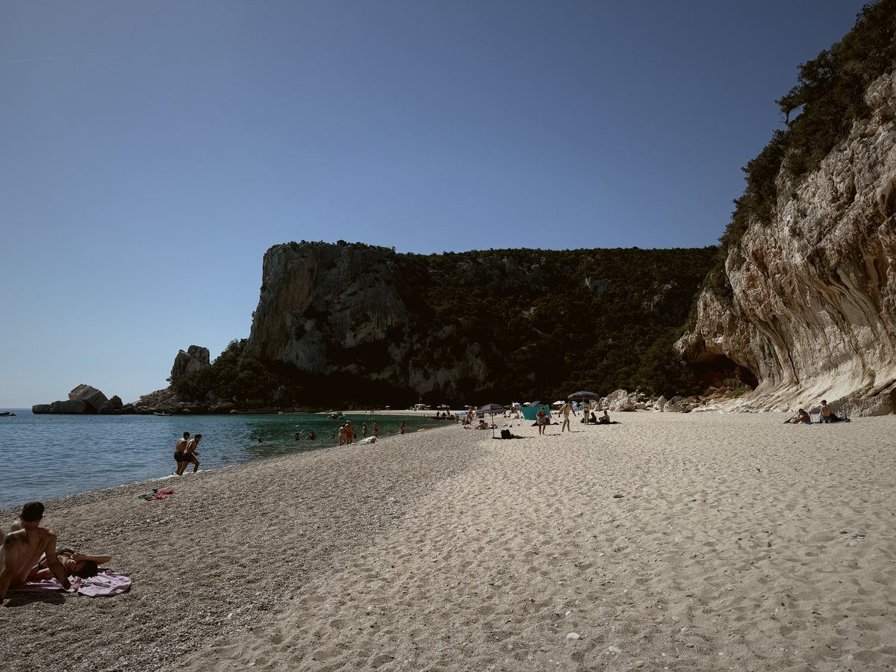
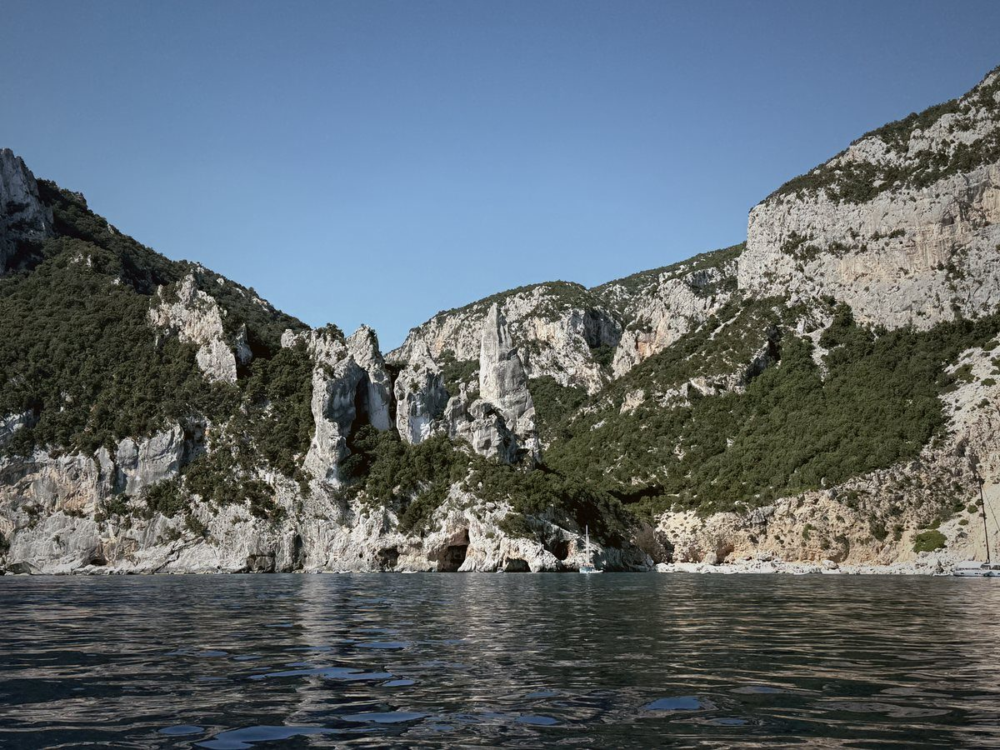
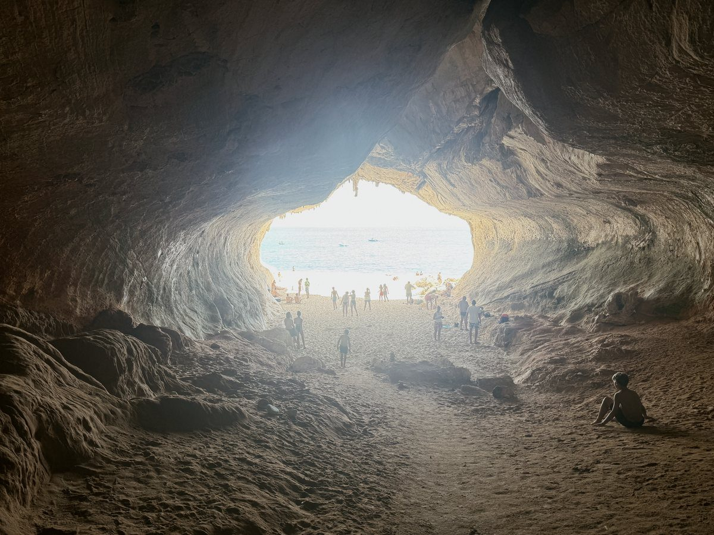

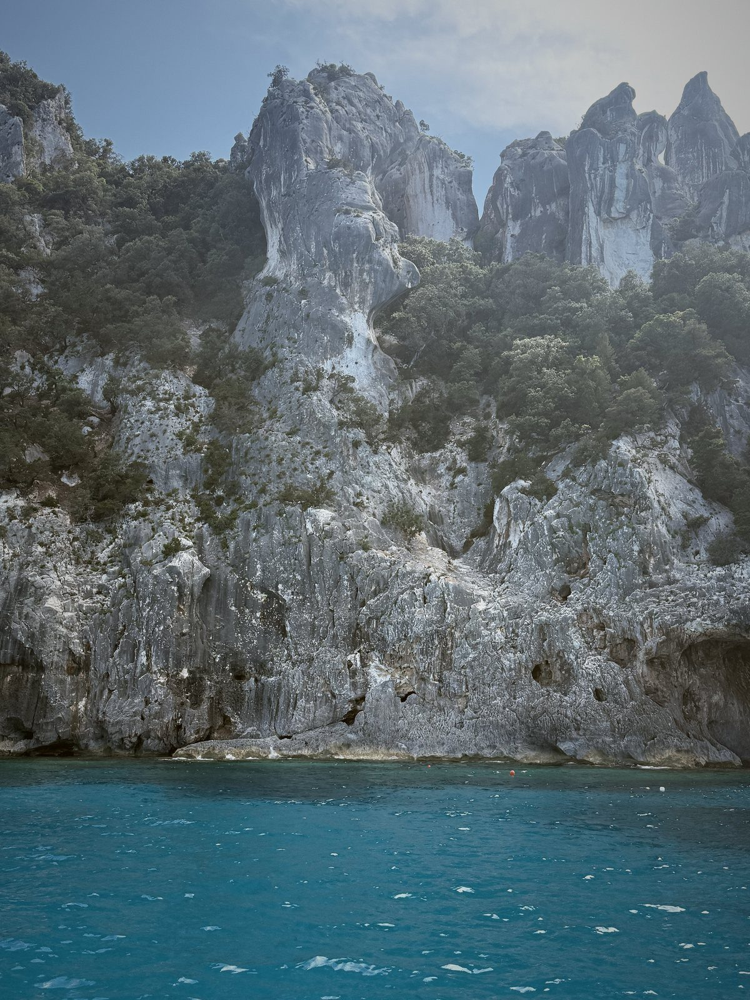
We rented a dinghy from a local operator at the marina in Santa Maria Navarrese, and it ended up being one of the best days of the trip. Booking was easy, communication happened through WhatsApp, and when we arrived, the boat was ready, fueled, and waiting. We got a quick orientation, were told to be back by 5:00 p.m., and then we were off. We also rented a cooler, which was absolutely worth it for drinks, snacks, and lunch.
We headed straight to the northernmost point we were allowed to reach and then slowly worked our way back south, which I think was the perfect strategy because it let us linger wherever we wanted without stressing about time.
Our stops included:
- Cala Luna
- Cala Sisine
- Cala Biriola
- Piscine di Venere
- Grotta del Fico
- Cala Mariolu
- Spiaggia dei Gabbiani
- Cala Goloritzé
Honestly, every stop felt more beautiful than the last.
A lot of these beaches are hard to reach by land, which is exactly why the boat day felt so special. We anchored in tiny coves, swam in the clearest water, snorkeled, and just kind of let the day unfold at its own pace. That freedom made the whole thing feel more personal than any group tour ever could.
Cala Luna was probably the most dramatic, and I would absolutely make the effort to get there again. The limestone caves and bright turquoise water were just gorgeous.
At Grotta del Fico, we did a guided tour through huge limestone caves with stalactites, stalagmites, and underground water. It was also a nice break from the heat, which we all appreciated.
But our favorite beach of the whole trip was probably Cala Goloritzé. It is one of those places people hype up, and somehow it still lives up to it. The limestone pinnacle, the towering white cliffs, and the impossible blue water are just stunning.
On the way back, we cruised past Capo Monte Santo and Pedra Longa, which felt like the perfect last scenery for a perfect day.
Orrì Beach and Sardinia's Blue Zone
The next day we completely slowed down and spent the afternoon at Orrì Beach after the kids took wakeboarding lessons farther down the coast.
We reserved chairs and umbrellas at Maty Beach Club, and because we booked the evening before, we got great second-row seating. It also happened to be one of the hottest days of the trip, so the sand felt almost too hot to walk on barefoot while the locals seemed completely unbothered.
The beach clubs and restaurants made it easy to stay the whole day, and the food was good. One thing we were not entirely used to was how common smoking still is at outdoor seating in Italy. Combined with the heat, it made lingering over long meals a little less relaxing for us than it might have been otherwise.
As we drove through Ogliastra, we started noticing obituary notices posted around town and got curious about Sardinia's Blue Zone. It is one of the places in the world where people, especially men, have historically lived exceptionally long lives.
After being there, it made sense. Life really does feel slower. People are active. Communities are tight. Food is local and seasonal. There is a simplicity to it that feels healthy in a way you can almost sense before you even know the facts.
From Sardinia to Sicily
On the drive toward Cagliari, we stopped to see the flamingos around Molentargius Natural Park, which was such a fun surprise. Wild flamingos just hanging out near the city was not something I expected to see, and it ended up being one of those tiny travel moments that sticks with you.
From there we flew Ryanair from Cagliari to Palermo. The flight was only about an hour, but just know that checked luggage and larger carry-ons cost extra.
We took the train from Palermo Airport to Palermo Centrale, then continued by regional train to Cefalù, where our Sicilian part of the trip officially began.
The Aeolian Islands and Stromboli
The Aeolian Islands rise out of the Tyrrhenian Sea like something out of a dream.
The pool overlooked Stromboli itself, and black-sand beaches were just a short walk away.
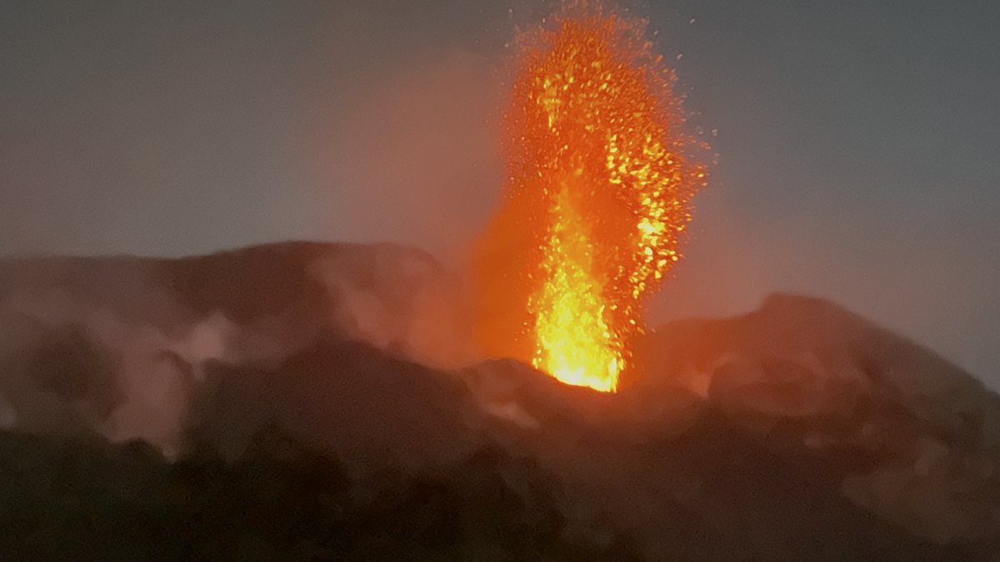
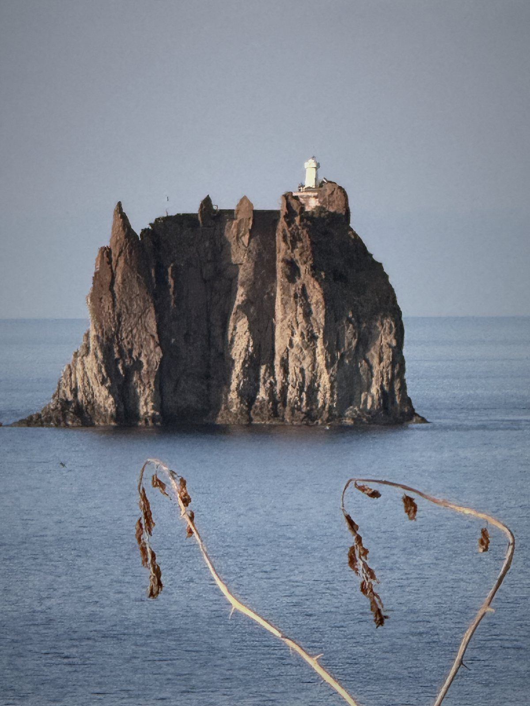
Lipari is the biggest and most practical. Salina is known for food, Malvasia wine, and capers. Panarea has the glam factor and gets compared to Capri or St. Barth. But we had one main goal. Stromboli.
We stayed there because we wanted to see one of the world's most active volcanoes after dark, and that was absolutely the right call.
From the ferry terminal, we walked about twenty minutes to La Sciara Hotel in Piscità. Looking back, we probably would have taken one of the golf cart taxis, especially with luggage, but the walk gave us our first little glimpse of island life.
La Sciara was exactly what we wanted. Simple, welcoming, and in a great spot. The pool overlooked Stromboli itself, and black-sand beaches were just a short walk away.
Our favorite became the bigger beach near Bubba's Bar, where the vibe was relaxed, the drinks were good, and it was very easy to lose track of time in the best way.
Those black-sand beaches were warmer than the others we had visited because the sand held onto the sun all day.
One night we had dinner at Terra Nera, which was another reminder of how consistently delicious Sicilian food is. We also became a little obsessed with arancini and granita, and honestly there were no downsides there.
But the real reason people go to Stromboli starts a few hours before sunset.
The volcano hike is hard. You climb around 1,400 feet over about 2.5 miles, often in heat and volcanic ash, and the guides keep a good pace with plenty of breaks. It is physically demanding, but totally doable if you are prepared.
And then you get there.
The sun starts dropping into the Tyrrhenian Sea, the mountain starts rumbling, and suddenly Stromboli is doing what Stromboli does.
It is called the Lighthouse of the Mediterranean, and once you see it erupting, you understand exactly why. The deep booms, the bursts of lava, the glowing pieces of rock flying into the crater, it is one of the most jaw-dropping things I have ever seen.
Photos really do not do it justice.
Watching Stromboli erupt at sunset instantly went onto our list of greatest natural experiences, right up there with glaciers calving in Alaska.
The hike back is all in the dark, with headlamps, along a different trail paved in volcanic rock. Looking down the mountainside, we could see all the other hikers descending in a long line of tiny lights, which looked a little bit like ants making their way home.
By the time we got back to town just before 11 p.m., we were completely spent and also completely convinced it had been worth every step.
Leaving the next morning, I kept thinking about the Aeolian Islands in Greek mythology and the story of Aeolus, keeper of the winds. It really does feel like a place where old stories could still live in the landscape.
Cefalù
If Sardinia felt wild and rugged, Cefalù felt like it was slowly pulling you in and telling you to relax.
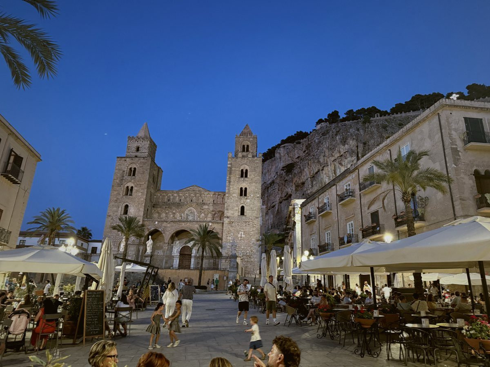
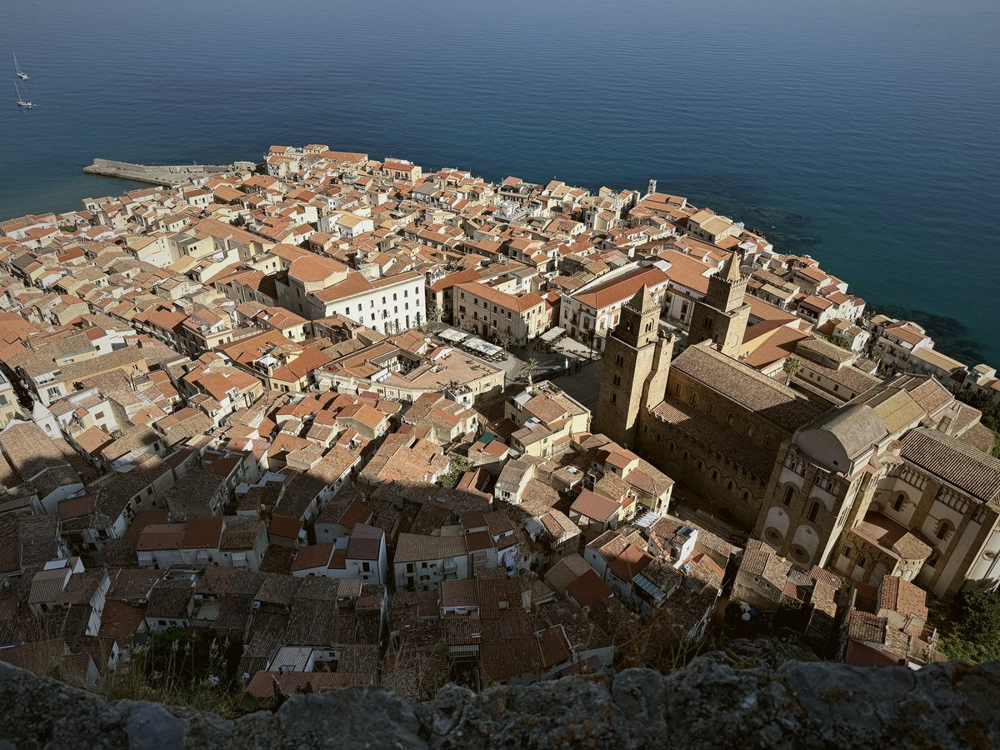
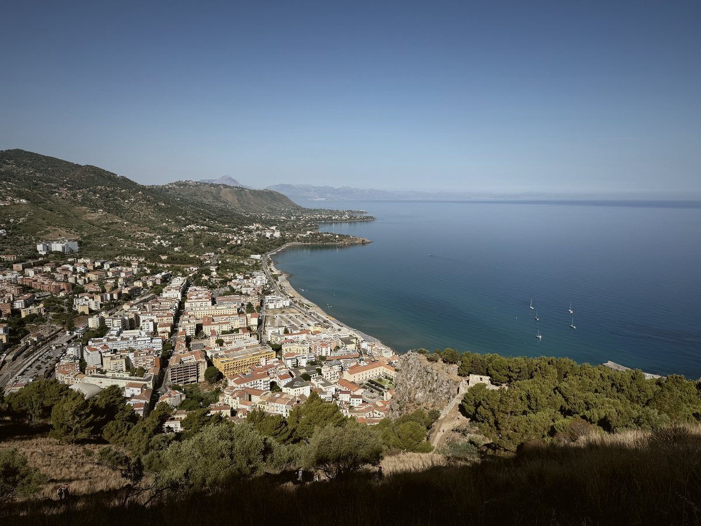
We stayed in an Airbnb overlooking the sea on the edge of the historic center, which made it easy to walk everywhere. Every morning started with cappuccinos in Piazza del Duomo before the town really woke up. It became one of my favorite rituals of the whole trip.
One of the first things we did was La Rocca, the huge limestone cliff above town. The gates open at 8:00 a.m., and going early is absolutely the move. The hike climbs about 900 feet, but a lot of it is shaded in the morning, which makes the whole thing much more pleasant. At the top, the views are ridiculous in the best way, with red rooftops, the turquoise Tyrrhenian Sea, and the remains of the Temple of Diana.
Back down in town, we wandered through the Duomo di Cefalù, which is a UNESCO World Heritage Site and famous for its Byzantine mosaics. A few minutes away is the Medieval Wash House, where fresh spring water still runs through old stone basins before spilling toward the sea. Naturally, we dipped our feet in, which turned into a very spontaneous and very refreshing cold plunge.
We later realized the nearby beach was one of the filming locations for The White Lotus Season 2, which made the whole area feel even more fun.
The town beach is beautiful, but it was also one of the busiest beaches we visited. If you want chairs and umbrellas, reserve them ahead of time.
Food in Cefalù was one of the great joys of the trip. One dinner included a seafood platter for two, handmade pasta with chopped Sicilian pistachios, and one of the best cannoli we have ever had. We even met the chef afterward, who told us he had cooked in Cape Cod for nearly a decade before moving back home to Sicily. I love those kinds of moments. They make a place feel human.
Another night we had dinner at Brama, and the atmosphere was just as good as the food. Even the kids got into the conversation with the staff, although our son got gently roasted after admitting Parmesan was not his thing.
And do not leave Cefalù without trying a warm graffa. It is Sicily's soft fried doughnut, dusted in sugar and sometimes filled with sweet cream, and it is exactly as good as it sounds.
After a few slow and beautiful days, we boarded the train to Milazzo, grabbed a taxi to the ferry terminal, and headed to one of the places I had been most excited for, the Aeolian Islands.
Taormina
If Stromboli was rugged and wild, Taormina felt effortlessly elegant.
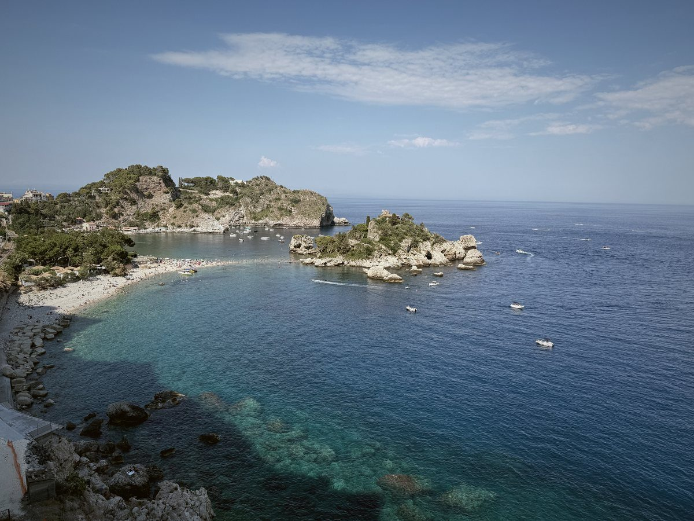
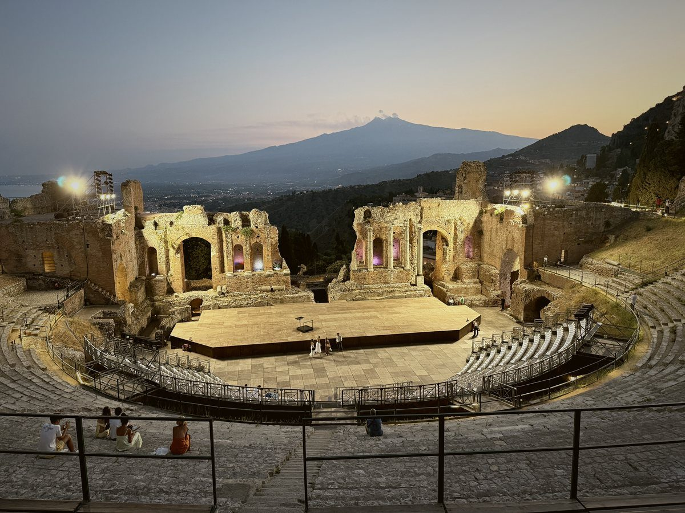
We stayed within walking distance of Isola Bella, the tiny island nature reserve connected to the mainland by a narrow strip of sand. We explored it over several days, including the beautiful villa and gardens once owned by Lady Florence Trevelyan, whose vision helped shape so much of Taormina's botanical beauty.
The kids' favorite memory was renting jet skis along the bay. What was supposed to be a quick thirty-minute thing somehow became one of the biggest highlights of the whole trip.
Evenings were spent wandering Corso Umberto, shopping a little, people-watching a lot, and stopping for dinner whenever something looked too good to pass up.
One of our favorite casual dinners was at La Romana, where the pizza was every bit as good as people told us it would be. The owners were friendly and told us we could not leave Sicily without trying lemon on watermelon, orange on calamari, and almond granita.
But the Ancient Greek Theatre was the real showstopper.
It sits high above the coastline and somehow frames Mount Etna and the Ionian Sea in one view, which feels almost unfair because it is so pretty. Even without the 2,300 years of history, the setting alone would make it worth the visit.
Transportation around Taormina takes a little patience. We relied on the local buses, which require you to put larger luggage underneath before boarding. It felt a little chaotic at first, but once we did it once, it became surprisingly easy.
From there we boarded the train south to our final stop.
Syracuse and Ortigia
Our last stop was Syracuse, where Greek mythology, ancient history, and everyday Sicilian life all blend together in the most beautiful way.
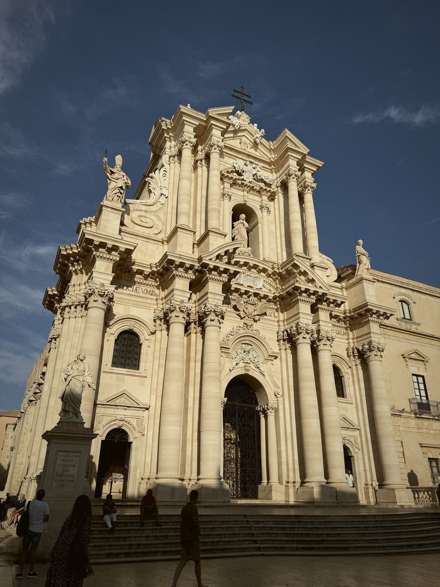
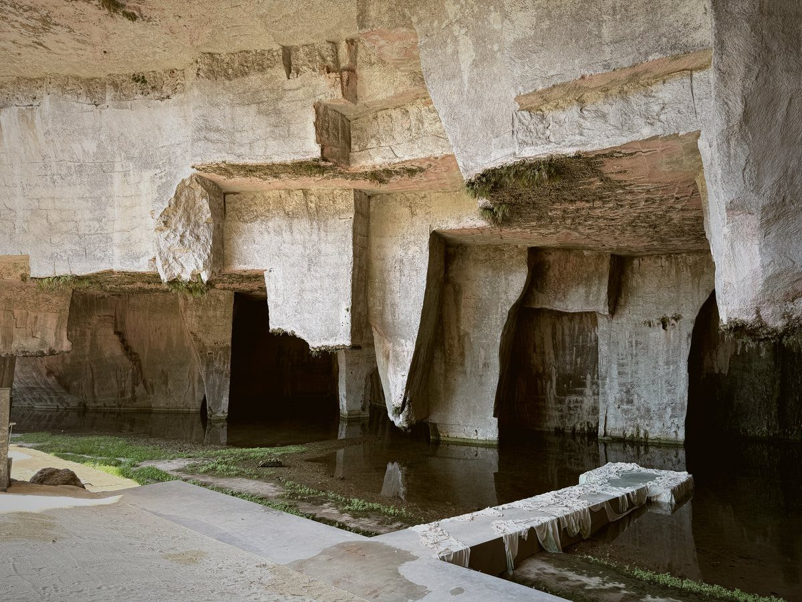
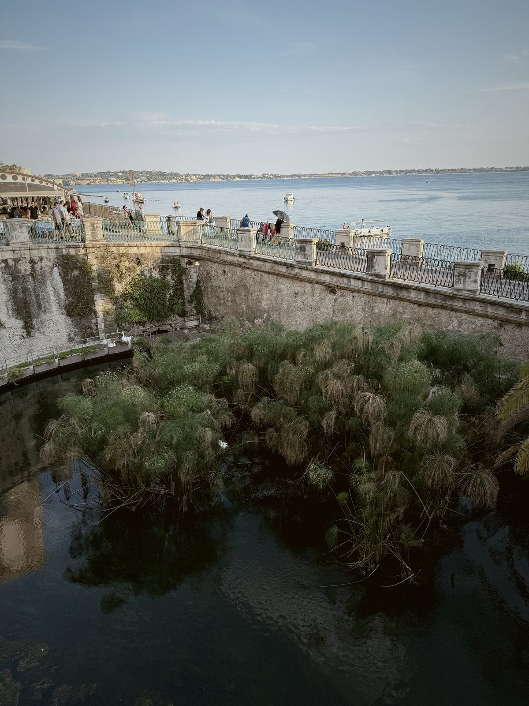
Most visitors spend their time in Ortigia, the historic island at the heart of the city, and it is easy to see why.
The Cathedral of Syracuse was built right over the ancient Temple of Athena, and you can still see original Greek columns built into the church walls. That kind of thing stops you in your tracks.
Just steps away is Fonte Aretusa, a freshwater spring by the sea that is known for its papyrus plants. It is one of the only places in Europe where papyrus still grows naturally, which feels a little magical.
Our favorite meal in Ortigia was at OZ & Cappuccio, followed by endless espresso stops, gelato breaks, and wandering the stone streets without any real agenda.
The next morning we visited Neapolis Archaeological Park, which was one of the most impressive archaeological sites of the trip.
The highlights were the massive Greek Theatre, the Roman Amphitheatre, Latomia del Paradiso, and the Ear of Dionysius, which is famous for its strange acoustics.
Before leaving Syracuse, we wandered through Mercato di Ortigia, sampled cheeses and almond cookies, and finished with huge sandwiches from Caseificio Borderi, which was absolutely worth the wait. I still think about those sandwiches.
It felt like the best possible ending to three full, beautiful weeks.
A Few Things We Would Pack Again
- Water shoes
- Lightweight quick-dry towels
- A compact dry bag
- Travel snorkel and goggles
- A small portable Bluetooth speaker
- Patagonia Houdini jackets for windy ferry rides and cooler evenings
- Comfortable running or walking shoes
- Tide To Go pens for inevitable travel mishaps
Sardinia Tips
- Never take sand, shells, rocks, or pebbles from Sardinia's beaches. Protected natural areas are strictly enforced, and fines can be substantial.
- Recycling is taken seriously throughout Sardinia. It can be confusing at first, so check your accommodation's instructions.
- Sardinia is one of Europe's premier cycling destinations. Be prepared to share the road with cyclists, especially in the mountains.
- WhatsApp is often the fastest and easiest way to communicate with local businesses, restaurants, agriturismi, and boat operators.
Traveling with Teenagers
Traveling with teenagers was one of the best parts of this trip, but I would be lying if I said it was always a cake walk.
There were moments when they did not want to go where we wanted to go, or they pushed back on plans that felt important to us as parents. And honestly, that is the dance of it. You want to hold onto these fleeting years, but they are also becoming their own people with opinions, moods, and preferences that deserve space too.
What made the biggest difference for us was remembering that this is not just about getting them to the next beautiful place. It is also about getting to know them in this stage of life and making room for who they are becoming. Sometimes that meant compromising. Sometimes that meant listening more than leading. And sometimes it meant accepting that the best family trips are not the ones where everyone agrees on everything, but the ones where you stay connected even when you do not.
A few things made all the difference:
- Build downtime into your itinerary.
- Give them opportunities to help make decisions.
- Share the history and stories before you arrive, because they are much more engaged when they understand what they are seeing.
- Set expectations for dress codes at churches and restaurants ahead of time.
- Encourage moments without phones, because some of our favorite memories happened when everyone simply put their devices away and looked around.
In the end, this trip was never really about the beaches or the granita, as good as both were. It was about watching our kids fall for the places their dad's family came from, and about slowing down enough to move at the islands' pace instead of our own. We came for a vacation and left with something closer to a homecoming. We are already talking about when we go back, and I have a feeling Sardinia and Sicily will keep pulling us south for years.